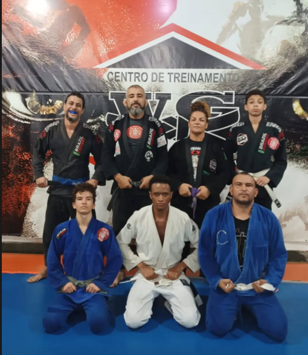
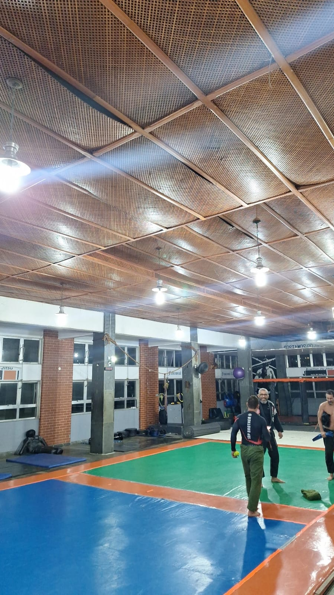
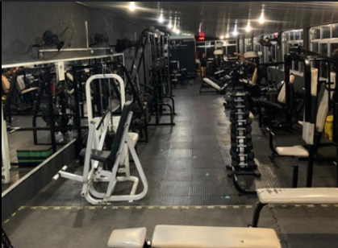

Fora do trabalho
<<<<<<< HEAD O jiu-jitsu é parte da minha vida fora do trabalho. Ao longo do tempo, a arte marcial me mostrou formas diferentes de lidar com questãoes do meio profissional. ======= O jiu-jitsu é parte central da minha vida fora do trabalho. Treinar com consistência ao longo do tempo me moldou de formas que nenhum curso consegue — e essas qualidades aparecem diretamente na minha postura profissional. >>>>>>> e2b4241b7fb62301d4b897c9cb96f74f019be32f

Arte Marcial · Esporte Principal
Jiu-Jitsu Brasileiro
<<<<<<< HEAD O jiu-jitsu ensina que problema complexo se resolve com método. A analise da situação, é essencial para a estratégia e execução sob pressão. A cultura do tatame — respeito, humildade e melhoria contínua — é o mesmo ideal ======= O jiu-jitsu me ensinou que problema complexo se resolve com método, não com força bruta. No tatame, você analisa a situação, adapta a estratégia em tempo real e executa sob pressão. É exatamente o que faço quando estou depurando uma macro VBA que parou de funcionar em produção, ou quando preciso redesenhar um fluxo de dados para um relatório urgente. A cultura do tatame — respeito, humildade e melhoria contínua — é o mesmo mindset >>>>>>> e2b4241b7fb62301d4b897c9cb96f74f019be32f que levo para o trabalho com dados e código.

Comunidade
Centro de Treinamento
<<<<<<< HEAD Fazer parte de um CT é entender que evolução acontece em equipe. ======= Fazer parte de um CT é entender que evolução acontece em equipe. Aprendi a dar e receber feedback sem ego — habilidade que levo direto para o ambiente de trabalho colaborativo. >>>>>>> e2b4241b7fb62301d4b897c9cb96f74f019be32f

Condicionamento
Treinamento Físico
<<<<<<< HEAD Musculação complementa o jiu-jitsu e mantém o equilíbrio mental. ======= Musculação complementa o jiu-jitsu e mantém o equilíbrio mental. Disciplina no treino físico reflete na capacidade de manter foco em projetos técnicos de longa duração. >>>>>>> e2b4241b7fb62301d4b897c9cb96f74f019be32f